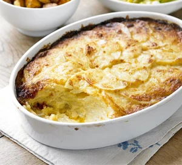

Potato Dauphinois
Description
Thin slices of potato slow cooked in the oven with cream and garlic - the most decadent of potato side dishes. Also enjoyable as a complete dish on it's own!
Ingredients
- 8 large King Edward or Maris Piper potatoes
- 3 garlic cloves
- 500ml vegan double cream
- 500ml vegan milk
- 100g grated vegan cheese (optional)
Steps
- Heat oven to 190C / 170C Fan / Gas Mark 5.
- Add milk, cream and garlic to a large saucepan and simmer gently.
- Finely slice 8 large potatoes, add them to the cream and simmer for 3-5 minutes until just cooked, gently stirring throughout to prevent the potato from sticking to the bottom of the pan.
- Remove the potatoes with a slotted spoon and layer them evenly in a wide shallow overnproof dish.
- Pour over the garlic infused cream - just enough to seep through the layers and leave a little moisture on the surface.
- Optional - sprinkle over the grated cheese.
- Bake for 30 minutes until the potatoes are soft and golden brown on top.
- Serve with salt and pepper to taste - enjoy on it's own or as a side dish.